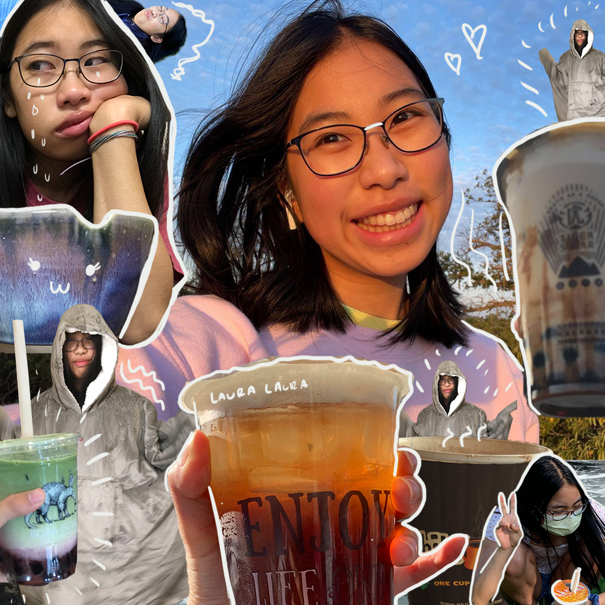

// 02/09/23
visual-thinking-anaylysis {
This image is a photo I took while on a trip to Taiwan to visit relatives. I chose to use this image because of the multiple elements inside it, including the train, a poster, and a walking path. Specifically, the poster is of a lantern festival because I went to the location to launch lanterns myself.
This image relates to my topic of explaining photos from places I've been as it has many components that relate to the context of where the photo was taken.
My collection of photos will be organized chronologically to help viewers see the path of my journey and also show what I prefer to take photos of.
This image looks like a collage of the student's daily life, from studying to getting drinks and maybe even exercising.
What I find most interesting about this image is definitely the way the images are combined in a collage, and the meaning or story behind each one and how they come together.
The most obvious aspects of this image are who it's about (the student) as well as their drinks and clothing. I think the more mysterious or obscure aspects of the image come from the sketched on details, like the tears, hearts, or highlights.